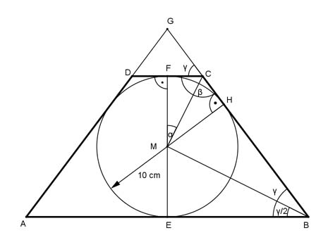
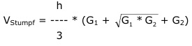

Aufgabe 263 Wie groß ist das Volumen V des quadratischen Pyramidenstumpfes, dessen mittiger Achsenschnitt im Bild dargestellt ist?  r = DC = 10 cm Satz von Pythagoras im Dreieck MCF: FC = DC/2 = r/2 cm MF = r r² 5 MC² = MF² + FC² = r² cm² + (r/2)² cm² = r² + ---- cm² = --- * r² 4 4 Im Dreieck MCF gilt: FC 5 cm tan α = ---- = ------- = 0,5 --> α = 26,6° MF 10 cm β = 2 * (90° - α) = 2 * (90° - 26,6°) = 126,8° γ = 180° - β = 180° - 126,8° = 53,2° Im Dreieck EBM gilt: EM = r = 10 cm γ/2 = 53,6°/2 = 26,6° EM tan (γ/2) = ---- | * EB EB EB * tan (γ/2) = EM | : tan (γ/2) EM 10 cm EB = ----------- = -------- = 20 cm = 2 * r cm tan (γ/2) 0,5 AB = 2 * EB = 2 * 2 * r = 4 * r cm  h = 2 * r cm 2 * r V = ------- * (r² + r * 4 * r + (4 * r)²) 3 2 * r V = ------- * 21 * r³ = 14 * r³ = 14 * 10³ cm³ = 14 000 cm³ 3